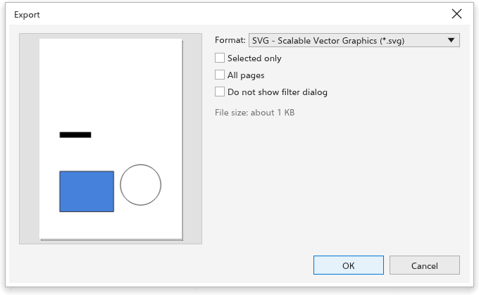

Halaman ini belum diterjemahkan dan ditampilkan dalam bahasa Inggris.
Exporting for the web
File > Export For > Web opens the Export dialog box set up for screens: PNG at 96 dpi. It keeps its own settings, apart from Export. Office does the same for office documents (PNG at 150 dpi).

Choosing a format
- PNG: sharp edges and transparency; best for logos, icons and illustrations.
- JPEG: small files for photos; no transparency. Set the quality (1 to 100).
- WebP: small files with transparency; set the quality.
- GIF: few colors, with transparency.
- SVG: vector graphics that stay sharp at any size and keep links and object names.
- HTML: a web page with the drawing.
Size and resolution
For bitmap formats, set the resolution, or type the width or height in pixels: the other side follows the proportions of the page. For a 32 by 32 pixel icon, type 32. With Transparent background on, the empty parts of the page stay transparent in PNG, WebP and GIF files.
Selected only exports only the selected objects, cropped to them; All pages exports every page. The preview shows what will be written, and the dialog box estimates the file size.
Before exporting text
Text > Make Text Web-compatible simplifies text for the web. To export many pages or objects at once, see The Export panel.